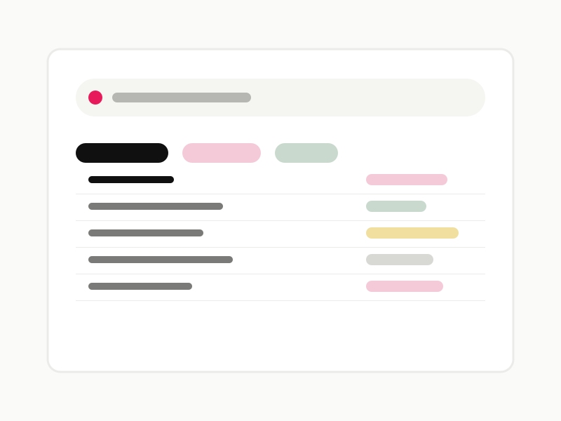

Product Design / Data Experience
Enterprise Data Catalog
A searchable data discovery experience that helps teams understand ownership, context, and trust signals before they use a dataset.
Focus
Clarifying how people find, evaluate, and confidently reuse enterprise data across complex internal systems.